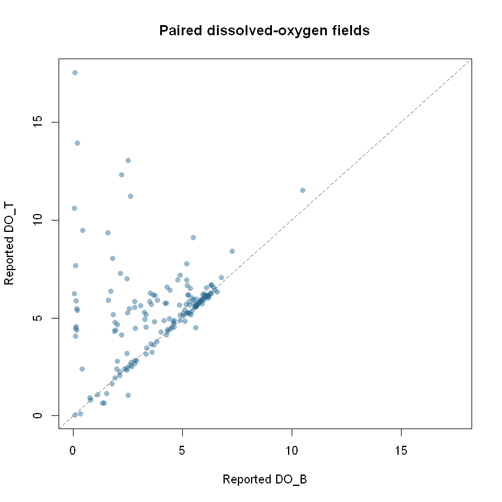

Explore Hillsborough water-quality observations
Source:vignettes/water-quality.Rmd
water-quality.RmdThis tutorial uses the checked Hillsborough EPC water-quality
observations layer, a sample view from Hillsborough County
monitoring stations rather than region-wide coverage of Tampa Bay. It
asks a modest question: how many records contain both reported
DO_T and DO_B measurements, and how do those
paired values compare? It extends the short
paired-reading exploration with an offline source check, a
missing-data audit, station and date summaries, and a reproducible
ggplot2 chart.
The source is a view of the latest staff-reviewed samples, not a complete monitoring history. The package checks its endpoint and schema; it does not validate laboratory methods or establish measurement units. This is one checked Hillsborough layer, not a survey of all Tampa Bay waters or monitoring programs.
Set up R
Install the package from GitHub and ggplot2 for the
optional plotting step. The examples use base R for cleaning and
summaries, so ggplot2 is an optional tutorial dependency,
not a required package import.
install.packages("pak") # if needed
pak::pak("Jaclenga/tampaBayOpenData")
install.packages("ggplot2") # if needed for the chart
library(tampaBayOpenData)The catalog and saved schema chunks below run without a network connection when this article is built. Live chunks are shown but not run during CRAN or website builds. Run those chunks in order in an internet-connected R session to analyze current observations. A source can change or be temporarily unavailable; the retrieval code reports a failure instead of substituting old data.
Find the checked monitoring layer
Search the curated catalog locally. source = "checked"
avoids a live portal scan and returns stable package IDs.
library(tampaBayOpenData)
water <- tbod_search_datasets("water quality", source = "checked")
water[, c("id", "title", "publisher", "category", "validation_status")]
#> # A tibble: 1 × 5
#> id title publisher category validation_status
#> <chr> <chr> <chr> <chr> <chr>
#> 1 hillsborough-water-quality Hillsborough … Hillsbor… Environ… checked
id <- "hillsborough-water-quality"
info <- tbod_dataset_info(id)
info[c("publisher", "title", "source_url", "verified", "scope_note")]
#> $publisher
#> [1] "Hillsborough County"
#>
#> $title
#> [1] "Hillsborough EPC water-quality observations"
#>
#> $source_url
#> [1] "https://hillsborough.maps.arcgis.com/home/item.html?id=04f8f5d7491b4d7aa2aacc6df7ea7f13"
#>
#> $verified
#> [1] "2026-10-05"
#>
#> $scope_note
#> [1] "The Environmental Protection Commission's item describes the latest staff-reviewed samples at monitoring stations, not the complete sample history. Methods, units, detection limits, and site coverage require source review."The verified date marks the catalog’s endpoint check,
not a sampling date. The ArcGIS
source item is published through Hillsborough County for its
Environmental Protection Commission. Read the item’s terms before
reusing results; the checked catalog does not identify an unrestricted
reuse license for this layer.
The package also offers live discovery. It may find other water-related items, but a live search depends on portal indexing and is not proof of complete regional coverage.
found <- tbod_search_datasets("water quality", source = "live",
jurisdiction = "hillsborough", max_items = 10)
found[, c("id", "title", "publisher", "validation_status")]
attr(found, "discovery_complete")Check fields, locations, dates, and units
The saved layer schema identifies StationNumber and
AreaName as location labels, SampleTime as an
ArcGIS date field, DO_T and DO_B as numeric
fields, and ID as the object ID. Its geometry is a point.
These are actual source field names; the saved schema does
not provide measurement units or a sampling protocol
for the two oxygen fields.
schema <- tbod_schema(id)
needed <- c("ID", "StationNumber", "AreaName", "SampleTime", "DO_T", "DO_B")
stopifnot(all(needed %in% schema$fields$name))
schema$fields[schema$fields$name %in% needed, c("name", "type")]
#> # A tibble: 6 × 2
#> name type
#> <chr> <chr>
#> 1 StationNumber esriFieldTypeString
#> 2 SampleTime esriFieldTypeDate
#> 3 AreaName esriFieldTypeString
#> 4 DO_T esriFieldTypeDouble
#> 5 DO_B esriFieldTypeDouble
#> 6 ID esriFieldTypeOID
schema$geometry_type
#> [1] "esriGeometryPoint"Inspect the current service metadata before analysis. The package compares it with this bundled baseline again during retrieval and stops on incompatible changes. If source units, depth meanings, or quality-control codes matter to your question, confirm them in the publisher’s current documentation; field names alone are insufficient.
Retrieve and audit current observations
This requests the full current layer with just the fields used here. It checks the retrieval provenance before analysis so a partial result is never treated as a complete view. The request can fail because a service is unavailable, its schema changed, or the operation exceeded its time budget.
current <- tryCatch(
tbod_dataset_info(id, refresh = TRUE, total_timeout = 90),
error = function(e) stop("Could not inspect the current EPC layer: ",
conditionMessage(e), call. = FALSE)
)
if (!all(needed %in% current$fields$name)) {
stop("The current EPC layer lacks a field used in this tutorial.",
call. = FALSE)
}
samples <- tryCatch(
tbod_get_dataset(id, fields = needed, total_timeout = 240),
error = function(e) stop("Could not retrieve the complete EPC sample view: ",
conditionMessage(e), call. = FALSE)
)
source <- tbod_provenance(samples)
if (!isTRUE(source$complete) ||
!isTRUE(source$returned_rows == nrow(samples)) ||
!isTRUE(source$matched_rows == nrow(samples))) {
stop("EPC retrieval was incomplete; do not interpret these records.",
call. = FALSE)
}
if (!inherits(samples$SampleTime, c("POSIXct", "Date"))) {
stop("SampleTime was not returned as a usable date; inspect its time zone metadata.",
call. = FALSE)
}
source[c("publisher", "source_url", "retrieved_at", "matched_rows",
"complete", "integrity")]
str(samples[, needed])
head(samples[, needed])tbod_get_dataset() converts the UTC ArcGIS
SampleTime value to an R date-time when the current
metadata still declares that time reference. Source column names are
preserved. The full retrieval checks object-ID membership, but live
attributes can still change during a request.
Clean blank station and area labels, retain only finite numbers for
paired measurement calculations, and report exclusions. A missing
DO_T or DO_B is not a zero
reading.
clean <- data.frame(
station = trimws(as.character(samples$StationNumber)),
area = trimws(as.character(samples$AreaName)),
sample_date = as.Date(samples$SampleTime, tz = "UTC"),
do_t = as.numeric(samples$DO_T),
do_b = as.numeric(samples$DO_B)
)
clean$station[is.na(clean$station) | !nzchar(clean$station)] <- NA_character_
clean$area[is.na(clean$area) | !nzchar(clean$area)] <- NA_character_
has_pair <- is.finite(clean$do_t) & is.finite(clean$do_b)
audit <- data.frame(
check = c("All retrieved records", "Distinct nonblank station IDs",
"Missing or nonfinite DO_T", "Missing or nonfinite DO_B",
"Records with both oxygen fields"),
count = c(nrow(clean), length(unique(stats::na.omit(clean$station))),
sum(!is.finite(clean$do_t)), sum(!is.finite(clean$do_b)),
sum(has_pair))
)
print(audit, row.names = FALSE)
paired <- clean[has_pair, , drop = FALSE]
paired$difference <- paired$do_t - paired$do_bSummarize site coverage and sample dates separately from the oxygen comparison. This is a snapshot of the current view: the month table describes which dates are present, not a trend or a consistent monthly sampling schedule.
station_counts <- sort(table(clean$station, useNA = "no"), decreasing = TRUE)
head(station_counts, 10)
dated <- clean$sample_date[!is.na(clean$sample_date)]
if (length(dated)) {
range(dated)
month_counts <- sort(table(format(dated, "%Y-%m")), decreasing = TRUE)
head(month_counts, 12)
} else {
message("No sample dates were returned.")
}
areas <- split(paired$difference[!is.na(paired$area)],
paired$area[!is.na(paired$area)])
if (length(areas)) {
by_area <- data.frame(
area = names(areas),
paired_records = vapply(areas, length, integer(1)),
median_do_t_minus_do_b = vapply(areas, median, numeric(1))
)
by_area <- by_area[order(-by_area$paired_records), , drop = FALSE]
print(by_area, row.names = FALSE)
} else {
message("No paired records have a nonblank area label.")
}The by_area median is a descriptive comparison of the
two reported fields, with units unconfirmed. Records
may cover stations or dates unevenly; do not rank areas as better or
worse water quality from this table.
Plot paired readings
The image below is an archived illustration,
generated by the linked exploration from a full layer retrieval on
October 6, 2026. It is not a current measurement or the
output of this article’s live code. Points on the dashed diagonal have
equal reported DO_T and DO_B; points away from
it have different values. The original run reported 263 records, of
which 161 contained both fields.

Run this ggplot2 code after the live retrieval to make
the same comparison for today’s view. It stops with an informative
message if no paired readings are available.
if (!nrow(paired)) {
stop("No records have both DO_T and DO_B; there is nothing to plot.",
call. = FALSE)
}
if (!requireNamespace("ggplot2", quietly = TRUE)) {
stop("Install ggplot2 to draw the oxygen comparison.", call. = FALSE)
}
oxygen_plot <- ggplot2::ggplot(paired, ggplot2::aes(x = do_b, y = do_t)) +
ggplot2::geom_point(color = "#256789", alpha = 0.55, size = 2) +
ggplot2::geom_abline(slope = 1, intercept = 0, linetype = "dashed",
color = "#555555") +
ggplot2::coord_equal() +
ggplot2::labs(
title = "Paired oxygen fields in the current EPC view",
subtitle = paste(nrow(paired), "records with both reported values"),
x = "Reported DO_B (units not confirmed here)",
y = "Reported DO_T (units not confirmed here)",
caption = paste("Hillsborough EPC station sample view via tampaBayOpenData;",
"not region-wide Bay coverage")
) +
ggplot2::theme_minimal(base_size = 12)
print(oxygen_plot)Interpret and reproduce the analysis
The chart compares two values within records that report
both. Excluded records can differ systematically from included
ones. StationNumber and AreaName describe
source labels, not independently verified locations; the point layer’s
site coverage is not known to be comprehensive. The source view cannot
establish historical improvement, regulatory compliance, safety for
swimming or drinking, or a cause of any difference. Confirm field units,
sampling depths, detection limits, methods, and quality flags with the
publisher before making environmental or policy claims.
For a reproducible report, record the output of
tbod_provenance(samples), the package version from
packageVersion("tampaBayOpenData"), the retrieval time, the
fields selected, and the date you consulted the source item. Save the
retrieved object and provenance together if you need to revisit a dated
analysis. The package does not archive source records.
Continue with housing and development, infrastructure and capital projects, or the Data Coverage dashboard for the checked catalog’s scope and verification status.